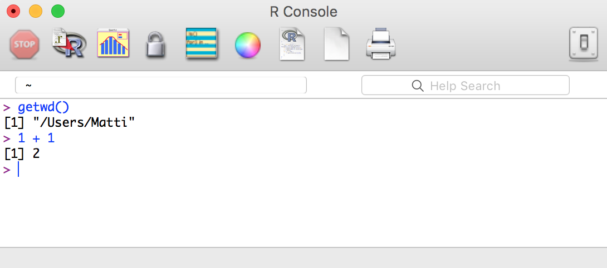
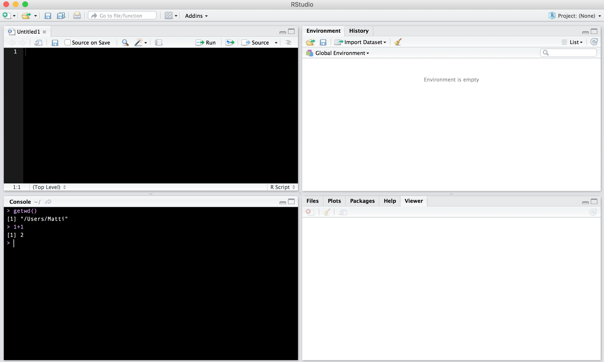
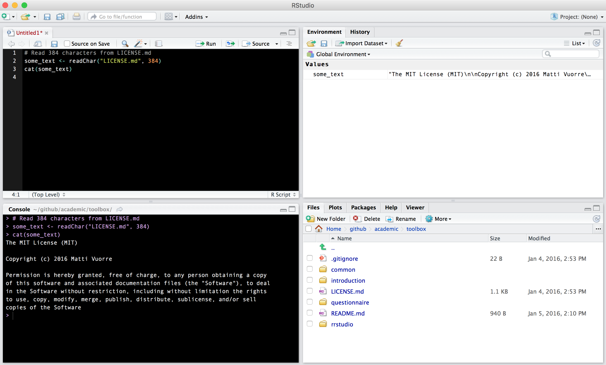

Introduction to R and RStudio
Matti Vuorre
2016-09-05
Here we introduce R (R Core Team, 2015), and its associated integrated development environment (IDE), RStudio (RStudio Team, 2015). We prefer these tools over alternatives, such as SPSS, Excel, or MATLAB because they are free.
R
is a programming language that was developed some decades ago by a couple of statisticians in New Zealand. Because it was developed by statisticians, it is very suitable for statistical programming but is also disliked by many programmers more familiar with general-purpose languages, such as Python. I use both Python and R, and absolutely love R. Together with RStudio it makes a fantastic environment for data-related programming. If you’re not familiar with programming at all, you can think of a programming language, such as R, as something that lives in a computer, and when requested, performs computation on the input given to it. In order to give input to R, we need to open a console that allows typing inputs to R. The same console also prints the outputs of the computations. Pictured below is the R console, where I’ve asked R to get the Working Directory. I then also checked if math still works.

Installing R
Please navigate your web browser to https://cran.r-project.org/, and download the latest version of R (making sure you download the appropriate one for your operating system).
For more in-depth instructions, and some history on the R project, see http://socserv.mcmaster.ca/jfox/Books/Companion/preface.pdf.
RStudio
 is an Integrated Development Environment for the R language. You can use R without RStudio, but it makes using R a lot easier, and provides a ton of added functionality. I very strongly recommend using R with RStudio.
is an Integrated Development Environment for the R language. You can use R without RStudio, but it makes using R a lot easier, and provides a ton of added functionality. I very strongly recommend using R with RStudio.
Within RStudio, we can access the R console, and more. In addition to the R console, RStudio provides (in clockwise order from top left) a source panel, an environment panel, and a viewer panel. These panels are shown in RStudio’s default view below:

Install RStudio
Go to https://www.rstudio.com/products/RStudio/ and download the free Desktop version of RStudio. https://www.rstudio.com/online-learning/#R provides links to many helpful R and RStudio related resources.
Get started with RStudio
Go ahead and open RStudio on your computer. You will see a four-panel layout similar to what I’ve shown above.
The two panels on the left, which I chose to display with a black background for my aesthetic preferences, are your main “blackboard”: You write commands in the source panel on the top, and view output in the console below. The crucial difference between these two panels is that if you type commands directly into the console, R evaluates the command but doesn’t save the command itself. The source panel is a fancy text editor that allows you to type code just as you would in a text editor, but also allows you to execute the code, the results of which are then displayed in the console below. You should always write your code in the source panel, so that you will be able to save your work at the end of your coding session. To execute code in the source panel, press Cmd + return (OS X) or Ctrl + return (Windows) on the line you’d like to run.
The two panels on the right are for maintaining the working environment, displaying plots, and doing all sorts of other miscellaneous neat things. The upper right panel displays the environment that will be populated with objects in your workspace. If you, for example, save a value into a variable, the variable will be displayed here.
The bottom right panel displays plots, can be used to browse files, manage packages, and view help pages. Now, we will use this panel, specifically its Files tab, to set the working directory. Open the Files tab, and navigate to the root of the toolbox folder (remember where you saved it on your computer?). Then set this folder as your working directory by clicking the “More” button in the Files tab.

R now understands that any command that refers to outside files should refer to files within this directory. For instance, we can use R to access the file LICENSE.md in the current working directory (don’t worry about the command, but appreciate that R can access this file and print its contents):

As you can see from the image, I entered some code in the Source panel, and executed each line by pressing Cmd + enter. The results of executing these lines then appeared in the Console: We read 384 characters from the file LICENSE.md into an object (some_text). This object was subsequently created in the environment, and is therefore visible in the Environment panel. We then printed the object in the console. The Files panel displays the contents of the working directory.
Equipped with this basic knowledge of R and RStudio, we can begin our first task: Installing additional R packages.
Install packages
We will often rely on additional packages to the R programming language. Additional packages are user-contributed “modules” containing multiple functions to make using R easier, and prevent us from having to re-invent the wheel. Installing these packages is simple; you only need to call a few functions in R. So, with R open, enter the following commands to the console:
install.packages("readr")
install.packages("dplyr")
install.packages("ggplot2")
install.packages("reshape2")These commands connect to the online R package repository, then download and install the packages specified by the text strings. Specifically, we installed four packages that we will be using in our data-wrangling and visualization workflow:
- readr (Wickham & Francois, 2015b)
- Reading data tables with style
- dplyr (Wickham & Francois, 2015a)
- comprehensive framework for a data-wrangling pipeline
- ggplot2 (Wickham, 2009)
- grammar of graphics plotting framework
- reshape2 (Wickham, 2007)
- transforms data between long and wide formats
Figure 1
R is pre-installed with easy-to-access plotting functions. To illustrate how easy it is to perform plotting in R, I create Figure 1 (again, don’t worry about the code just yet):
n <- 300
x <- seq(-3, 3, length = n)
y <- x^2 * 1 + rnorm(n)
plot(x, y)The relationship between x and y.
Cool, right?!
With this understanding of R and RStudio, you are ready to start importing some data into R.
Further reading
Books
Maindonald, J., & Braun, W. J. (2010). Data analysis and graphics using R: an example-based approach (Vol. 10). Cambridge University Press.
Peng, R. D. (2015). Exploratory Data Analysis with R. Leanpub. Retrieved from https://leanpub.com/exdata
Websites
The Institute for Digital Research and Education at UCLA maintains a good website with tons of R-related material.
Specific topics
The two best ways to get answers to specific questions about R are 1. using a search engine, and 2. viewing and posting questions to Stack Overflow.
References
R Core Team. (2015). R: A language and environment for statistical computing. Vienna, Austria: R Foundation for Statistical Computing. Retrieved from https://www.R-project.org/
RStudio Team. (2015). RStudio: Integrated development environment for r. Boston, MA: RStudio, Inc. Retrieved from http://www.rstudio.com/
Wickham, H. (2007). Reshaping data with the reshape package. Journal of Statistical Software, 21(12), 1–20. Retrieved from http://www.jstatsoft.org/v21/i12/
Wickham, H. (2009). Ggplot2: Elegant graphics for data analysis. Springer Science & Business Media.
Wickham, H., & Francois, R. (2015a). Dplyr: A grammar of data manipulation. Retrieved from http://CRAN.R-project.org/package=dplyr
Wickham, H., & Francois, R. (2015b). Readr: Read tabular data. Retrieved from http://CRAN.R-project.org/package=readr